| The culture of Pai has evolved greatly over time, from its relative isolation during the Sukhothai era, to its more contemporary Ayutthaya era, which absorbed influences from all over Asia. Indian, Chinese, Burmese, Khmer and other Southeast Asian influences are still evident in traditional Thai culture. Buddhism, Animism and Westernization also play a significant role in shaping the modern culture.
Thai national culture is identified differently throughout regions in Thailand where it also integrated different regional cultures such as the Lanna, Isan, including Chinese origin, Portuguese origin , Persian origin, and in the reign of King Chulalongkorn in the late 19th century, the European trend of nationalism began to insert greater influence into Thai culture. However, the promotion of civic culture reached its peak after the Siamese revolution of 1932 where a series of authoritarian regimes began to insert greater control over people's culture and lifestyles, especially under the regime of Field Marshal Plaek Phibunsongkhram. |
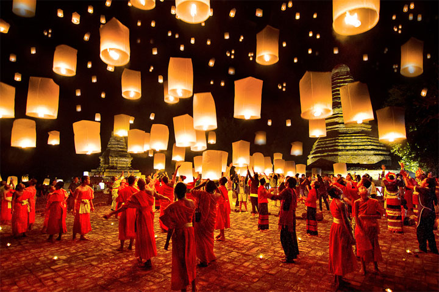 |
| 1. Explore Pai Canyon |
| Known as Thailand’s answer to the Grand Canyon (a very ambitious claim), Pai Canyon covers a large area that offers some brilliant views and fun hikes.
If you are feeling very active you can scramble all the way down and spend hours climbing and getting lost in nature.A favourite pastime is enjoying the sunset with a beer in hand, watching the sky change to an astonishing array of colours.
It’s a bit of an adventurer’s playground too because some of the paths are quite skinny and sketchy, so make sure you wear good shoes if you are planning on exploring the place properly.You won’t be alone for sunset, but that just adds to the awesome atmosphere!
Get there by riding your scooter out of town back towards Chiang Mai. |
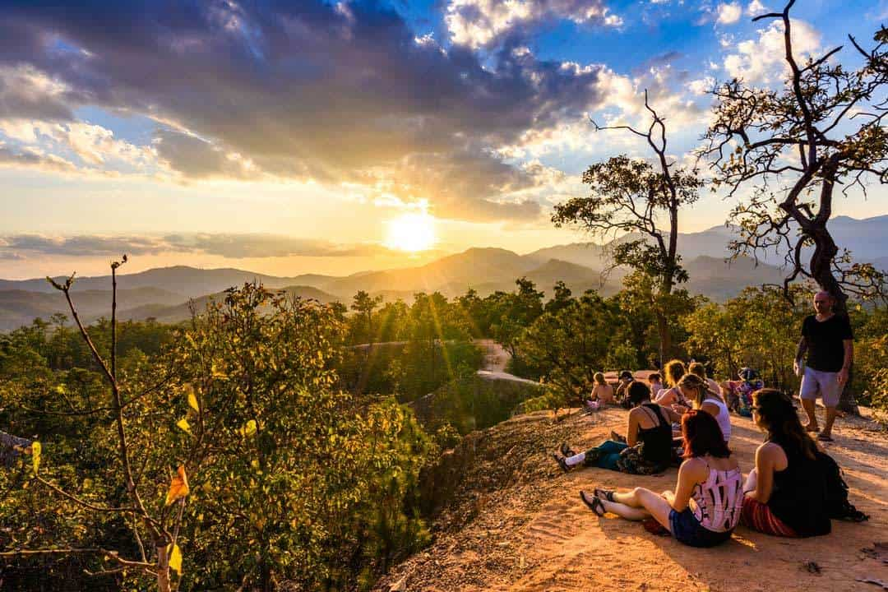 |
| 2. The White Buddha (Wat Phra That Mae Yen) |
| You can see it from most places in town, and the White Buddha high on the hill isn’t only a religious shrine, it also offers some of the best views over Pai!
Once you cross the bridge heading out of town keep following the road until you are about 2km out of town, and you’ll see the path to the top.
There are 353 steps to reach the White Buddha, and while it might be tiring, the vistas from the top are always worth it.
Time your trip to be at the top for sunset and you’ll quickly fall in love with the entire valley changing colours right before your eyes.
Make sure you take water with you, and even though the temperature can be hot keep in mind that you still need to show respect to Buddha by covering up.
It’s difficult deciding what to see in Pai, but the White Buddha is a Pai must-see. |
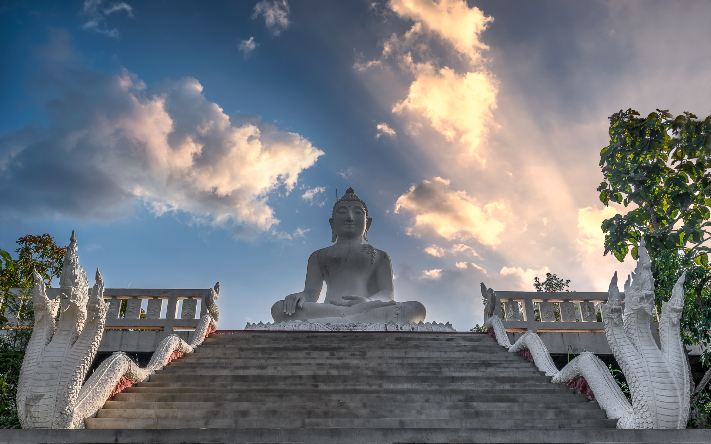 |
| 3. The Tham Lod Caves |
| Not exactly located in Pai, but instead, in a town 35km headed towards Mae Hong Son, there is a spectacular limestone system known as Lod (Spirit) Caves.
A river flows through the caves and you can hire a guide to float through them on a bamboo raft.
At certain points, you can climb upstairs and ladders to explore the stalactites and stalagmites up close as well as the numerous ancient ceramics and wall paintings that are scattered throughout the complex.
Definitely worth the drive/ride out there. |
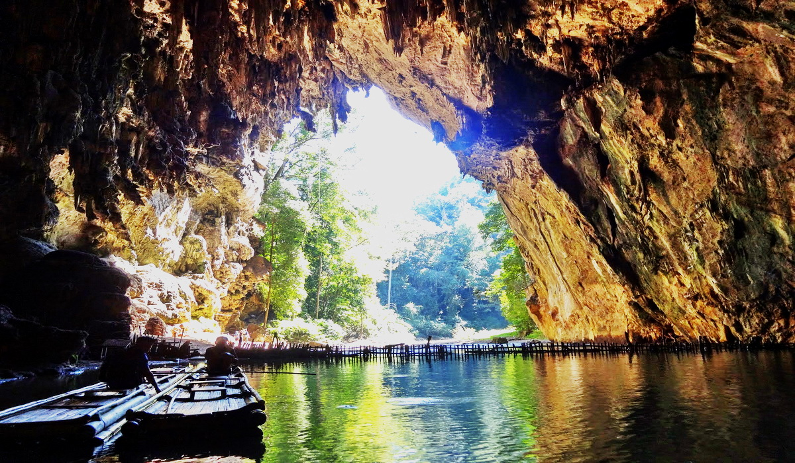 |
| 4. The WWII (Memorial) Bridge |
| The WWII Bridge was built by the Japanese back in 1942. The bridge was used to transport weapons and supplies to Myanmar during WWII. Out of all the places to see in Pai, this bridge has the most historical significance.
But besides its history, it’s also just a nice place to go for a walk. The bridge crosses a gorgeous river making for some good photo opportunities. Going to the WWII Bridge is free, but keep in mind that it is a popular tourist hotspot so it can be very busy. |
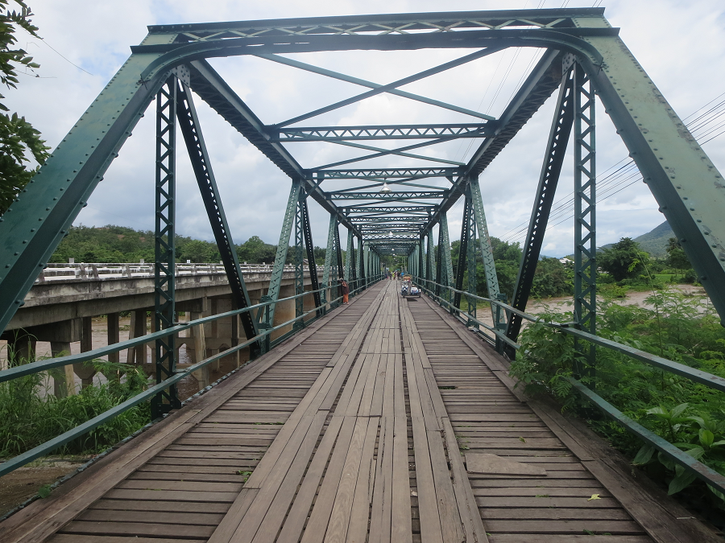 |
| 5. Mae Yen Waterfall |
| Another waterfall in Pai is almost 7km away from the city. This is the most adventurous and fun to travel for. The place is secured from the hands of the locals and is being saved from the damage of human activities. This is among the reasons for the water here to be pure. To reach the place of this waterfall, one must get through the forest by trekking. The hiking trail starts from the entrance of the dam and requires almost 2 hour to complete the trail. It is advised to hike during the summer as the water-level is under control and the paths are clear. Otherwise, during the rainy season, there are chances of slippery path, which may not be convenient and safe. |
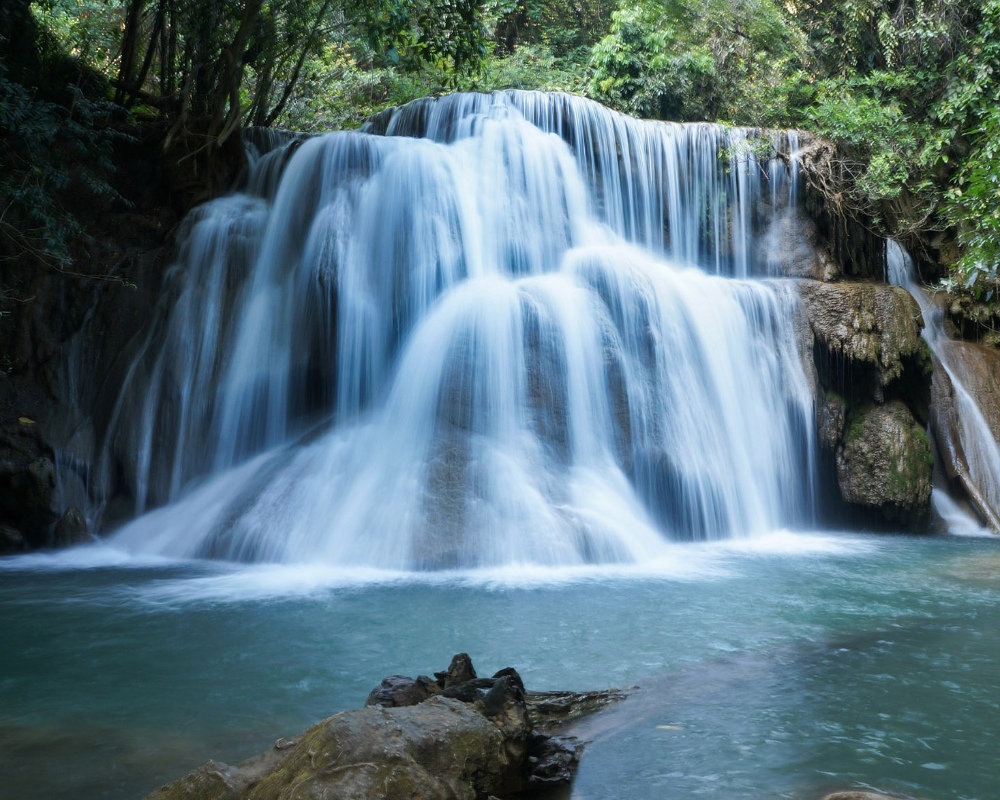 |
| 1. Som Tam Pu Ma (Spicy Blue Crab Papaya Salad). |
| Fusing the zesty som tam from the Northeast (Isan) and fresh blue crab of Hua Hin, this all-time favourite appetizer dish is not to be missed. It tastes every bit like the well-pounded som tam – an invigorating blend of spicy and sour that makes it so addictive – but with chunks of raw blue crab that you can munch on.
This crab salad is a mixture of imitation crab flakes, celery, red onion, fresh dill, lemon juice, Old Bay seasoning and mayonnaise. Everything gets mixed together in a big bowl, then you can either chill your salad, or serve it immediately. |
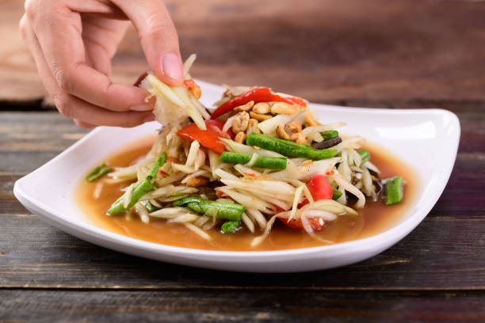 |
| 2. Kan Chiang Pu Nueng (Steamed Crab Wing). |
| Steamed crab is the main highlight on Hua Hin’s food menu, but cracking the crab on the dining table is a messy business. Steamed crab wing is a hassle-free alternative, as it’s bite-sized, meaty and come ready-to-eat. Simply dip one in the spicy seafood sauce that comes with the dish and enjoy. This is a good starter dish.
That's right, the main ingredient is actually a fish paste called surimi. Surimi is often made from pollock fish with fillers and flavorings like starch, sugar, egg whites, and crab flavoring. |
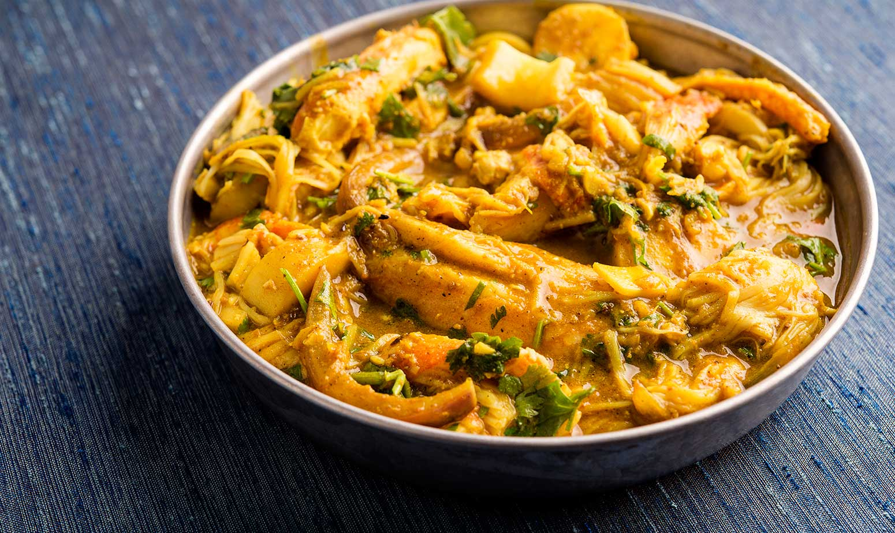 |
| 3. Au Suan (Deep-fried Oyster Pancake). |
| Although a popular dish in Bangkok as well, Au Suan in Hua Hin tastes much more satisfying due to the freshness and size of its key ingredient: oyster. Raw egg and plump oysters go in a wok first, then after a few vigorous stirs, diluted tapioca starch solution and a dash of quality oyster sauce follow. The dish is usually served in a searing hotplate.
It consist of flour, cornmeal, salt and pepper together in a separate casserole dish. Add the oysters to the buttermilk and let soak. Then remove, letting the excess drip off, and dredge through the cornmeal mixture, tapping off the excess. |
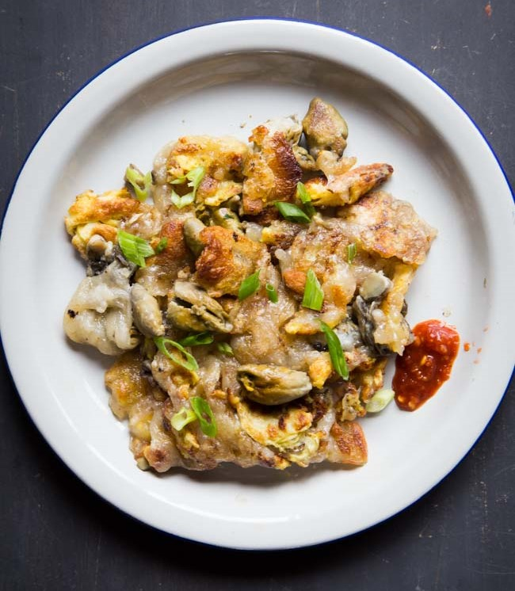 |
| 4. Haw Mok Talay (Steamed Seafood Custard). |
| This popular central region dish is traditionally made with freshwater fish, but the seafood variation substitutes sea bass for the fish and usually add a number of other seafood, such as mussels, squid and shrimp. Together with a coconut cream and red curry base, the dish is usually served in a coconut shell.
Fish custard is a custard that is actually flavoured with, or contains, fish. It is therefore a savoury dish. In reality, the Doctor ate what would be better termed "fish fingers and custard", a term which he has used — but he has also called the dish "fish custard" for short. |
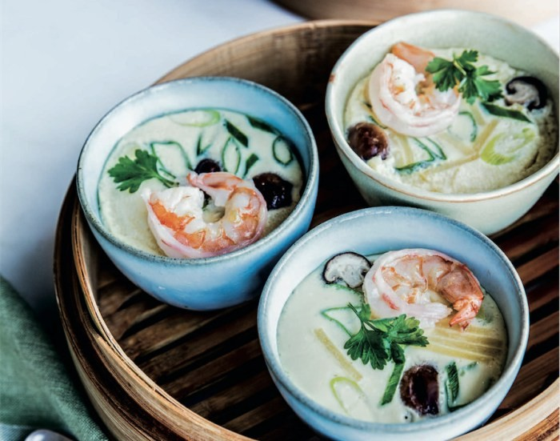 |
| 5. Plaa Sai Tod Kratiem (Garlic Fried Sand Whiting). |
| A common menu at Thai-style seafood restaurants in Hua Hin, garlic fried sand whiting makes a good appetizer or an a la carte dish that goes with steamed rice. These small silvery salt-water fish is found in abundance in the Gulf of Thailand and the Andaman Sea. Whole fish is marinated in a garlic peppercorn batter, then deep-fried until golden. Watch out for the bone when you dig in.
Whiting fish is a good source of vitamin B, magnesium and protein, according to the NOAA. Each 100-gram serving of whiting (the size of a standard filet) is 90 calories and contains roughly 18 grams of protein with about 1 gram of fat, making this a healthy lean protein choice. |
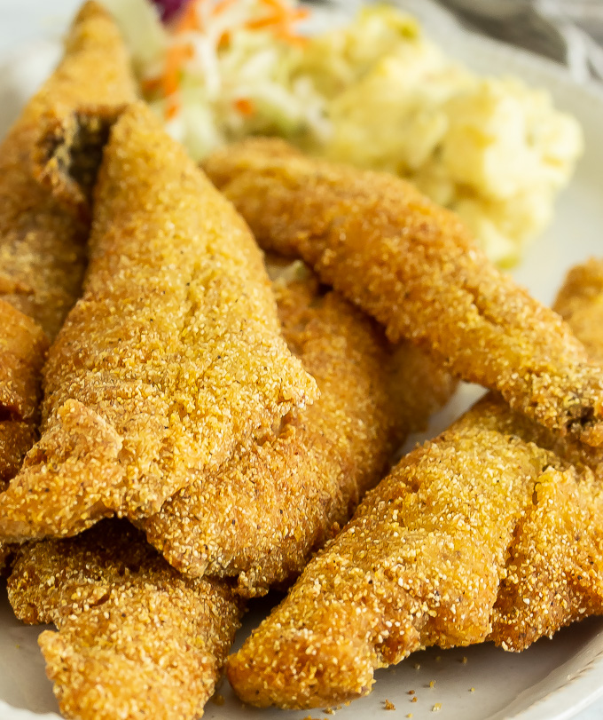 |
| 1. Thom’s Pai Elephant Camp |
It is very rare to find things that are unique and interesting at the same time. If trying something new and fun entices you, the Thom’s Pai Elephant Camp is a must try. The camp lets you to interact with the elephants of Thailand. These elephants are not harmed; in fact they are taken due care in order to support the elephant welfare. The workers here are dedicated and take the elephants to the river and are bathed daily. They are fed and let free for the tourists to spend some of their time with these sensitive and elegant animals. The trainer guides them to maintain the harmony.
Location: Mae Hi, Pai District, Mae Hong Son, Thailand. |
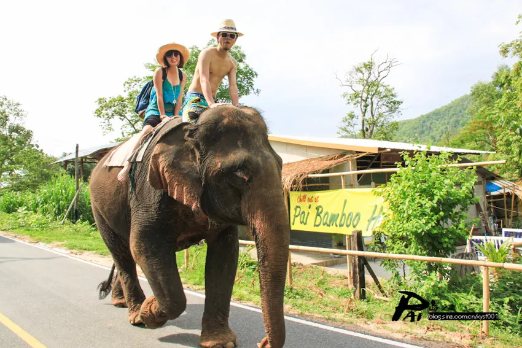 |
| 2. Chill in a Hammock |
| When you spend your days actively exploring everything Pai has to offer, it is only normal to need a break. Luckily Pai is one of the most relaxed places you are ever likely to visit.
Watch the hours fade as you laze about in a hammock, reading a book or watching the world pass you by.
Many accommodation options have great views over the valley or by the river. Be sure to choose one of these and enjoy the vistas! Definitely one of the best things to do in Pai.
| 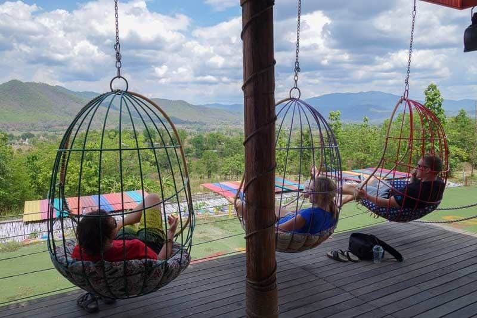 |
| 3. Go Whitewater Rafting. |
| One of the newest activities for what to do in Pai is going whitewater rafting, and if you’re looking for an adrenaline rush then this is the one for you.You can choose to do a one-day tour or even a two-day tour, charging down class 3 rapids in a purposefully-designed whitewater raft.
Our 1 day rafting adventure is unlike any rafting experience you may have encountered. The rafting adventure is 45 km of rafting through untouched jungle winding its way through a wildlife sanctuary. Along the way you will hand feed a family of Gibbons, see rocky out crops covered in lush jungle, gaze upon beautiful Suza waterfall, stop off at a hot spring, cliff jump in the rocky gorge, and hit 15 sets of rapids up to class 4. Whether you are a seasoned professional or a beginner this adventure is sure to please. All ages and abilities are welcomed. |
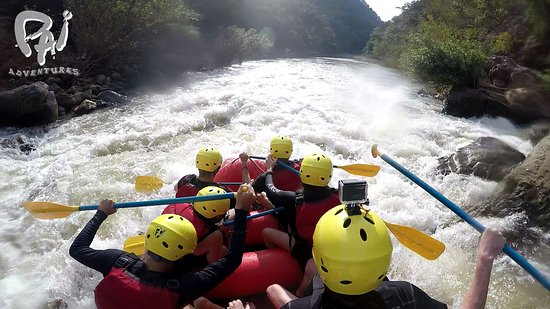 |
| 4. Go Tubing Down the River. |
| The Pai River hosts the best Pai activities – tubing.You head upriver with a bunch of friends and push yourself out into the water. Then you kick back and let the current take you back to town. The entire experience will take about an hour.
This is definitely one of the best things to do in Pai, especially on a hot day. Rent a tube from one of the tour companies in town for less than $10, including transport to and from the river.If you’ve never been tubing before then you’re in for a real treat. Basically all it requires is one big inflatable tube, your bathers and a sense of adventure. |
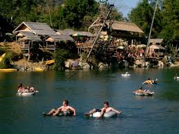 |
| 5. Spend Time in the Unique Cafes. |
| One thing that Pai does not lack is amazing cafes serving up delicious coffee and food. Most of them have interesting decors and amazing ambience and are a great way to while away the day.
You could easily spend a week here and not visit the same place twice! Dedicate some time to exploring all the cafes, both in town and on the outskirts.
Our personal favourite is Container Cafe just outside of Pai. It has cool chairs, delicious coffee and snacks and awesome views over the farmland below. |
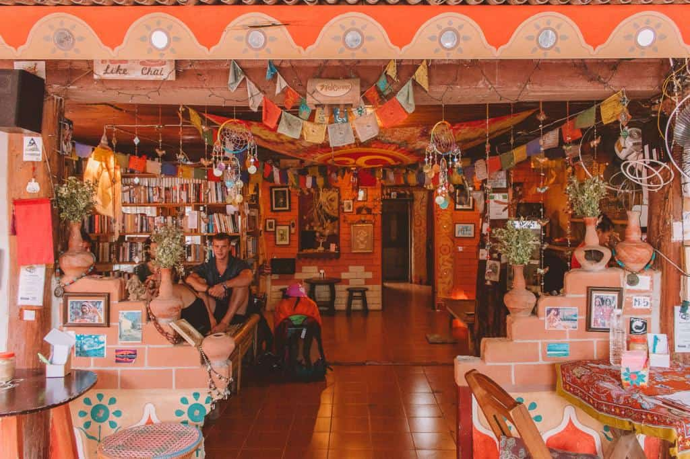 |